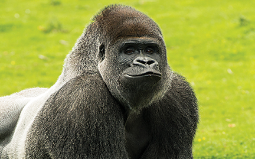

GORILLA
Gorillas are the largest living primates and are incredibly intelligent and gentle despite their size and strength. They share about 98% of their DNA with humans, making them one of our closest relatives. There are two species, the Eastern and Western gorilla, found in the forests of Central and Western Africa. Gorillas live in tight family groups led by a dominant male called a silverback because of the silver hair on his back. A full-grown silverback can stand over 1.7 meters tall when standing upright and weigh more than 200kg, with arms that can span over 2.5 meters wide.
What makes gorillas amazing is how human-like their behavior is. They use tools, build nests to sleep in every night from leaves and branches, and have complex emotions and family bonds. They communicate with over 20 different sounds, from laughs and grunts to screams when alarmed. Their hands are almost identical to ours, with opposable thumbs, and they can learn sign language in captivity. Despite their strength, they are mostly peaceful vegetarians who will only become aggressive if their family is threatened.
They are mainly herbivores, eating leaves, stems, bamboo shoots and fruits, spending most of their day foraging and resting. They live in troops of 5 to 30 individuals and are very social, grooming each other and playing together constantly.
WHERE WILL YOU FIND THEM
You will find the gorillas at pen E23, in the shaded forest area near the elephants.